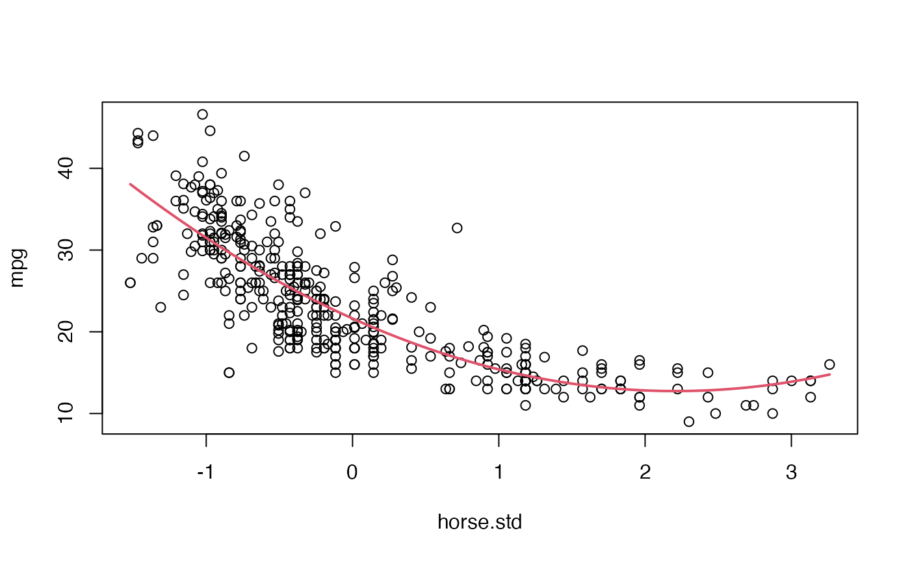
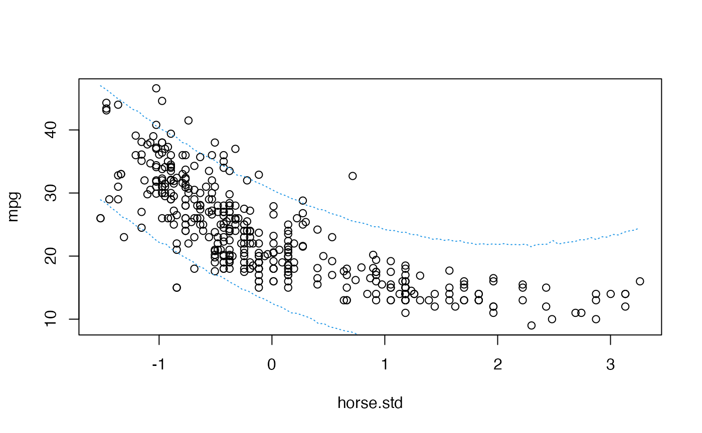

Simulation-based inference in a Bayesian quadratic model
Introduction
We resume the analysis of the data set of the library from the previous practical session. We are again interested in explaining the fuel consumption of the cars (variable ) as a function of their power ().
We start by loading the data and redoing the frequentist fit from the previous session:
if(!("ISLR"%in%installed.packages())){install.packages("ISLR")}
library(ISLR)
library(LaplacesDemon)
Auto$horse.std <- (Auto$horsepower-mean(Auto$horsepower))/sd(Auto$horsepower)
# Quadratic fit
Fit1 <- lm( mpg ~ poly(horse.std, degree = 2, raw = TRUE), data = Auto)
summary(Fit1)##
## Call:
## lm(formula = mpg ~ poly(horse.std, degree = 2, raw = TRUE), data = Auto)
##
## Residuals:
## Min 1Q Median 3Q Max
## -14.7135 -2.5943 -0.0859 2.2868 15.8961
##
## Coefficients:
## Estimate Std. Error t value Pr(>|t|)
## (Intercept) 21.6274 0.2852 75.83 <2e-16
## poly(horse.std, degree = 2, raw = TRUE)1 -8.0478 0.2953 -27.25 <2e-16
## poly(horse.std, degree = 2, raw = TRUE)2 1.8231 0.1809 10.08 <2e-16
##
## (Intercept) ***
## poly(horse.std, degree = 2, raw = TRUE)1 ***
## poly(horse.std, degree = 2, raw = TRUE)2 ***
## ---
## Signif. codes: 0 '***' 0.001 '**' 0.01 '*' 0.05 '.' 0.1 ' ' 1
##
## Residual standard error: 4.374 on 389 degrees of freedom
## Multiple R-squared: 0.6876, Adjusted R-squared: 0.686
## F-statistic: 428 on 2 and 389 DF, p-value: < 2.2e-16
plot(mpg ~ horse.std, data = Auto)
where <- seq(min(Auto$horse.std), max(Auto$horse.std), length = 100)
lines(where, predict(Fit1, data.frame(horse.std=where)), col = 2, lwd = 2)
We will now assume that we have prior information on the parameters of this analysis. That prior information may be summarised in the following conjugate prior:
Posterior distribution for the model parameters
As mentioned in the theoretical session, the posterior distribution of these parameters under this model is:
and
where , , and . Unlike Jeffreys’ prior, for this model no analytical expression can be deduced for the marginal posterior distribution , so the practical use of this model becomes quite problematic.
Analytical inference
We are going to generate functions for calculating the posterior distributions , and
X <- cbind(rep(1, dim(Auto)[1]), Auto$horse.std, Auto$horse.std^2)
y <- matrix(Auto$mpg, ncol = 1)
betahat <- matrix(Fit1$coefficients, ncol = 1)
RSS <- sum(residuals(Fit1)^2)
# P(sigma^2|y)
Psigma2<-function(sigma2){
dinvgamma(sigma2, 10+nrow(Auto)/2,
300+(RSS+t(betahat)%*%solve(5*diag(3)+solve(t(X)%*%X))%*%betahat)/2)
}
# P(beta|sigma^2,y)
PBetaGivenSigma2<-function(beta,sigma2){
dmvn(beta, as.vector(solve(diag(3)/5+t(X)%*%X)%*%(t(X)%*%y)),
sigma2*solve(diag(3)/5+t(X)%*%X))
}
# P(beta,sigma^2|y)
JointPosterior<-function(beta,sigma2){
P1 <- Psigma2(sigma2)
P2 <- PBetaGivenSigma2(beta, sigma2)
P1*P2
}We can use these functions to plot, for example, the posterior marginal distribution of , :
plot(seq(10, 30, by = 0.1), Psigma2(seq(10, 30, by=0.1)), type = "l",
xlab = "sigma2", ylab = "density", main = "posterior marginal density of sigma2")
However, the marginal posterior distribution of , is not analytic. We know the conditional posterior distribution of , i.e., we know that distribution for given values of but not for unknown values of this parameter. Possibly, simulation in this context could make things much easier.
Simulation-based inference
We could use the composition method in order to draw samples of . This could be done as follows:
# Sample from pi(sigma^2|y)
sigma2.sample <- rinvgamma(10000, 10+nrow(Auto)/2,
300+(RSS+t(betahat)%*%(diag(3)+solve(t(X)%*%X))%*%betahat)/2)
# Sample from pi(beta|y, sigma^2)
beta.sample<-t(sapply(sigma2.sample,function(sigma2){
rmvn(1, as.vector(solve(diag(3)+t(X)%*%X)%*%(t(X)%*%y)),
sigma2*round(solve(diag(3)+t(X)%*%X),5))
}))
# Sample from pi(beta, sigma^2| y)
posterior.sample <- cbind(beta.sample, sigma2.sample)With this, we have 10000 draws of the joint posterior distribution of and, from that sample, we could evaluate what we found of interest from these parameters. For example:
# Posterior mean of each parameter:
apply(posterior.sample, 2, mean)## sigma2.sample
## 21.550272 -8.048634 1.840648 20.906514
# Posterior standard deviation of each parameter:
apply(posterior.sample, 2, sd)## sigma2.sample
## 0.2971513 0.3068161 0.1879940 1.4504757
# Posterior probability of being higher than 0
apply(posterior.sample>0, 2, mean)## sigma2.sample
## 1 0 1 1Beyond the parameters of the model, we could take advantage of these samples to make inference about quantities of even greater interest such as, for example, the curve describing the relationship between the two variables. Thus, we can plot the posterior mean of the curve, and even assess its variability, by calculating the curve for each of the samples drawn from :
plot(mpg ~ horse.std, data = Auto)
# Posterior mean of the curve
where <- seq(min(Auto$horse.std), max(Auto$horse.std), length = 100)
posterior.mean.curve <- as.vector(cbind(rep(1,length(where)), where, where^2)%*%
matrix(apply(posterior.sample[,1:3], 2, mean),ncol=1))
lines(where, posterior.mean.curve, col = 2, lwd = 2)
# 95% credible band for the curve
posterior.curves <- t(cbind(rep(1,length(where)), where, where^2)
%*%t(posterior.sample[,1:3]))
Band <- apply(posterior.curves, 2, function(x){quantile(x, c(0.025,0.975))})
lines(where, Band[1,], col = 3, lwd = 1.5, lty = 2)
lines(where, Band[2,], col = 3, lwd = 1.5, lty=2)
Predictive inference
For given values of and we would know the predictive distribution of for a given value of : where is a vector with the covariates of the individual of interest. In that case we could use the composition method to sample values of a new hypothetical for any given value of and the sampled values .
SampleY <- function(at){
mu <- beta.sample%*%matrix(c(1, at, at^2), ncol = 1)
rnorm(nrow(mu), mu, sqrt(sigma2.sample))
}
samples <- sapply(where, SampleY)With this sample of the predictive distribution we can even plot prediction bands for the s:
quantiles <- apply(samples, 2, quantile, c(0.025,0.975))
plot(mpg ~ horse.std, data = Auto)
lines(where, quantiles[1,], col = 4, lty = 3)
lines(where, quantiles[2,], col = 4, lty = 3)
Analytical inference on this predictive distribution is far more complicated.
Time to individual work
We propose below an individual exercise that pursues to consolidate the basic concepts that we have learned in the previous theoretical session and that we have been practising in this session.
Exercice
We return to the analysis of the dataset by age and race of the children. Perform simulation-based inference on this data set assuming a non-informative Jeffreys’ prior for the parameters. Assess the probability that a 10-year-old child weighs more than 30 (kg.).